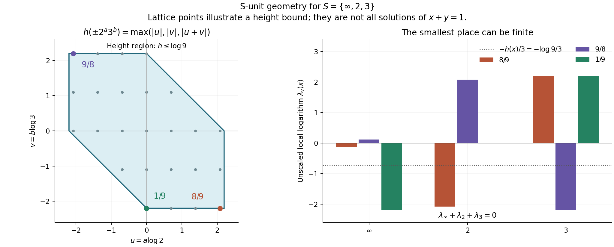

S-unit equations and Thue–Mahler equations
Authoring and mathematical self-check: OpenAI Codex — GPT-6 Astra, Ultra. Original exposition, CC0.
An \(S\)-unit can have denominators at specified primes. A small archimedean value therefore need not account for its height: some of the negative logarithms may occur at finite places. We use a local estimate at every allowed place and then the product formula to select one of them.
The free paper of Bugeaud and Győry, Bounds for the solutions of unit equations states its height-linear theorem on printed page 68 and uses this smallest-place argument on pages 76–78. Its height is multiplicative; throughout this lesson \(h\) is the absolute logarithmic Weil height. We give the argument using the complete programme proofs of the archimedean group bound and the refined finite-place estimate, including the coefficient-one parameter choice.
Prerequisite proofs
| Input | Programme proof |
|---|---|
| Heights, the product formula and effective Northcott finiteness | Heights of algebraic numbers, Theorems 2.4 and 2.6–2.8 |
| Ideal factorization, class-group finiteness and units | Discrete valuation rings and Dedekind domains, Finiteness of the class number, Corollary 8.2, and Dirichlet's unit theorem, Theorems 9.2 and 9.4 |
| Finite-place coefficient refinement over every number field | Lesson 10, Theorem 10.246 and definitions (10.1086), (10.1093)–(10.1094) |
| Group coordinates and archimedean approximation | Lesson 12, Corollary 12.3, Lemma 12.8 and Theorem 12.9 |
| Three-factor identity and recovery of coordinates | Lesson 13, Theorem 13.2 and equations (13.11)–(13.17) |
| Subspace theorem and nondegenerate unit equations | Rational approximation III, Theorem 12.13 and Corollaries 12.17–12.18 |
1. Logarithms and effective generators
Fix a number field \(K\) of degree \(d\), and a finite set \(S\) containing every infinite place. Write \(s=|S|\). At an infinite place put
\[ \lambda_v(z)=n_v\log|\sigma_vz|,\qquad n_v=1\text{ or }2, \]and at the prime ideal \(\mathfrak p\) put
\[ \lambda_{\mathfrak p}(z) =-\operatorname{ord}_{\mathfrak p}(z)\log N\mathfrak p. \tag{14.1} \]These are the unscaled logarithms: the product formula is \(\sum_v\lambda_v(z)=0\), and
\[ dh(z)=\sum_v\max\{0,\lambda_v(z)\} =\sum_v\max\{0,-\lambda_v(z)\}. \tag{14.2} \]In particular \(|\lambda_v(z)|\le dh(z)\).
The ring \(O_{K,S}\) consists of the elements integral outside \(S\); its units \(U_S\) are precisely the nonzero elements with \(\lambda_v(z)=0\) outside \(S\). The programme \(S\)-unit theorem gives \(U_S/\mu_K\) rank \(s-1\). For an \(S\)-unit,
\[ \sum_{v\in S}\lambda_v(z)=0,\qquad 2dh(z)=\sum_{v\in S}|\lambda_v(z)|. \tag{14.3} \]Thus the full \(S\)-logarithm image is a lattice in the sum-zero hyperplane. These assertions are proved in Number fields, Dirichlet's unit theorem, Theorem 9.4, and in Lemma 12.8.
Lemma 14.1 (a terminating construction of generators). A finite generating set of \(U_S\), and a basis \(g_1,\ldots,g_r\) of \(U_S/\mu_K\), can be found effectively. One can compute positive integers \(L,V\) such that
\[ z=\zeta\prod_{i=1}^r g_i^{b_i},\qquad \max_i|b_i|\le Lh(z),\qquad h(z)\le V\max_i|b_i|, \tag{14.4} \]where \(\zeta\in\mu_K\). For \(r=0\) all elements are torsion and the exponent inequalities are omitted.
Proof. We first construct a subgroup whose logarithms span the whole hyperplane. Let the ordinary unit rank be \(r_0\). Enumerate algebraic integers of norm \(1\) or \(-1\) in expanding integral-basis boxes. Interleave this enumeration with increasingly accurate interval computations of the logarithmic minors. Dirichlet's theorem ensures that a tuple of \(r_0\) units with a nonzero \(r_0\)-row minor exists. Eventually both that tuple and a rational interval excluding zero for its determinant are found. For \(r_0=0\) take the empty tuple.
Write the finite primes in \(S\) as \(\mathfrak p_1,\ldots,\mathfrak p_t\). For each \(j\), enumerate positive integers \(k\) and nonzero algebraic integers \(a\), in growing finite boxes of pairs, until
\[ (a)=\mathfrak p_j^k. \tag{14.5} \]Test this equality by exact ideal arithmetic. The class group is finite, as proved in Finiteness of the class number, Corollary 8.2, so some positive power of each \(\mathfrak p_j\) is principal. The search terminates. The selected \(a_j\) are \(S\)-units. Their finite valuation vectors have one nonzero coordinate each, whereas ordinary units have zero finite valuation vector. Together the selected elements \(\eta_1,\ldots,\eta_{r_0+t}\) have linearly independent logarithms. Since \(r_0+t=s-1\), these span the full hyperplane.
Let \(\Lambda_0\) be their integer logarithm lattice. Any \(\lambda_S(z)\) can be reduced modulo \(\Lambda_0\) to
\[ \lambda_S(z')=\sum_i t_i\lambda_S(\eta_i), \qquad 0\le t_i<1, \tag{14.6} \]by multiplying \(z\) by integer powers of the \(\eta_i\). Equation (14.3) gives \(h(z')\le\sum_i h(\eta_i)\). Choose an integer \(V_0\) strictly larger than this last sum. The explicit Northcott construction in Heights of algebraic numbers, Theorem 2.8, gives a finite list containing every element of \(K\) with height at most \(V_0\). Retain all members that are \(S\)-units, by factoring their principal fractional ideals. No exact comparison of a computed height with \(V_0\) is needed: one may retain the entire finite coefficient-box list after the \(S\)-unit test.
This finite set contains a representative of every coset modulo the subgroup generated by the \(\eta_i\). Together with those elements it generates all of \(U_S\), including its torsion. Lemma 12.8 now computes a basis modulo torsion and the constants in (14.4). In rank zero, (14.3) gives height zero for every \(S\)-unit, so the same finite Northcott list already contains the whole group. \(\square\)
The search above is a proof of termination, not an efficient unit algorithm. Its purpose is to make every constant used below computable from the fixed field and the fixed set \(S\).
2. Approximation by a fixed multiplicative group at every place
Lemma 14.2 (local height absorption). Fix a finitely generated subgroup \(\Gamma\subset K^\times\), a place \(v\), and a real \(\epsilon>0\). There is a computable \(K_v>0\), depending only on these data, such that
\[ -\lambda_v(1-A\gamma) \le \epsilon h(\gamma)+K_v\max\{h(A),1\} \tag{14.7} \]for every \(A\in K^\times,\gamma\in\Gamma\) with \(A\gamma\ne1\). The coefficient \(A\) varies; it is not among the fixed data.
Proof at an infinite place. Write \(H=\max\{h(A),1\}\). Use Theorem 12.9 at the embedding \(\sigma_v\), with parameter \(\epsilon/n_v\), and call its computable constant \(C_v\). If \(h(\gamma)>C_vH\), the contrapositive of that theorem gives
\[ |1-\sigma_v(A\gamma)|>e^{-(\epsilon/n_v)h(\gamma)}, \]which proves (14.7) with just its first term. If \(h(\gamma)\le C_vH\), the one-place height inequality and the height sum inequality give
\[ -\lambda_v(1-A\gamma) \le d\,h(1-A\gamma) \le d\bigl(h(A)+h(\gamma)+\log2\bigr) \le d(C_v+2)H. \tag{14.8} \]Thus \(K_v=d(C_v+2)\) works in both cases. This also explains why a conditional approximation theorem suffices for the unconditional inequality (14.7).
Proof at a finite place. Let \(v=\mathfrak p\), above the rational prime \(p\), and put \(N=N\mathfrak p\). Take a basis of \(\Gamma\) modulo torsion as in Lemma 12.8. If its rank is zero, \(h(\gamma)=0\), and (14.8) gives (14.7) with \(K_v=2d\). Hence suppose its rank is \(\rho\ge1\), and write \(\gamma=\zeta\prod_{i=1}^{\rho}g_i^{b_i}\). Use \(L_\Gamma\ge1\) from (12.42), so \(\max_i|b_i|\le L_\Gamma h(\gamma)\).
Put \(n=\rho+1\). In Theorem 10.246 use the bases
\[ \alpha_i=g_i\quad(i<n),\qquad \alpha_n=A\zeta, \qquad b_n=1. \tag{14.9} \]Choose fixed integers \(w_i\ge\max\{h(g_i),1\}\) for \(i<n\), and choose \(w_n=H\). Since \(Q>1\) in (10.1086), all height floors are satisfied. Also \(v_p(b_n)=0=\min_i v_p(b_i)\), allowing zero earlier coefficients. Set \(B_n=1\) and
\[ B=\max\{1,|b_1|,\ldots,|b_\rho|\} \le1+L_\Gamma h(\gamma). \tag{14.10} \]No multiplicative-independence or local-unit assumption is required in Theorem 10.246.
For this fixed \(n,K,\mathfrak p\), let \(\mathcal A_n,c_3,c_4\) be the explicit constants (10.1086), and define
\[ \begin{gathered} W=\prod_{i<n}w_i,\qquad T=\mathcal A_n\log N,\\ 0<\tau\le\min\left\{\frac12, \frac{\epsilon c_3}{T L_\Gamma}\right\},\qquad J=\log\left(\frac{c_4N^{n+1}W}{\tau}\right). \end{gathered} \tag{14.11} \]A positive rational \(\tau\) meeting these conditions can be chosen using rational upper bounds for the fixed constants. In the notation of that theorem, its auxiliary parameter is \(\tau\), its ratio \(r\) is \(B\), its height product is \(WH\), and its logarithmic expression \(L\) is \(J\). Notice that \(J\) does not contain \(H\) or \(B\), because the distinguished exponent equals one.
The theorem and (14.10) give
\[ \begin{aligned} -\lambda_{\mathfrak p}(1-A\gamma) &=\log N\,\operatorname{ord}_{\mathfrak p}(A\gamma-1)\\ &<T\max\{WHJ,\tau B/c_3\}\\ &\le TWJH+(T\tau/c_3)(1+L_\Gamma h(\gamma))\\ &\le\epsilon h(\gamma)+(TWJ+T\tau/c_3)H . \end{aligned} \tag{14.12} \]Here \(H\ge1\) absorbs the constant term. Thus \(K_{\mathfrak p}=TWJ+T\tau/c_3\) works. If the valuation is nonpositive the same conclusion holds directly; the calculation also includes that case. The assumption \(A\gamma\ne1\) is precisely the nonvanishing condition of the logarithmic estimate. \(\square\)
Choosing the auxiliary parameter before the variable coefficient is essential. An unrefined bound proportional to \(H\log B\) would not give the height-linear conclusion below by this argument.
3. The effective two-term S-unit theorem
Theorem 14.3. For fixed \(K,S\) there is a computable integer \(C_S\ge1\) such that every solution of
\[ \alpha x+\beta y=1,\qquad x,y\in U_S,\qquad \alpha,\beta\in K^\times \tag{14.13} \]satisfies
\[ \max\{h(x),h(y)\}\le C_S\max\{h(\alpha),h(\beta),1\}. \tag{14.14} \]In particular all solutions can be found by a terminating finite search.
Proof. Use Lemma 14.1 to compute the fixed group \(U_S\). Put \(H=\max\{h(\alpha),h(\beta),1\}\) and apply Lemma 14.2 to this group at every \(v\in S\), with \(\epsilon=d/(2s)\). Let \(K_0=\max_{v\in S}K_v\).
The negative logarithms of \(x\) sum to \(dh(x)\), by (14.3). One of the \(s\) places therefore satisfies
\[ \lambda_v(x)\le-dh(x)/s. \tag{14.15} \]This remains true when \(h(x)=0\), since then all these logarithms are zero. As \(\lambda_v(\alpha)\le dH\) and \(1-\beta y=\alpha x\ne0\), we obtain
\[ \frac d s h(x)-dH \le-\lambda_v(1-\beta y) \le\epsilon h(y)+K_0H. \tag{14.16} \]The equation itself gives
\[ h(y)=h((1-\alpha x)/\beta) \le h(x)+h(\alpha)+h(\beta)+\log2 \le h(x)+3H. \tag{14.17} \]Consequently
\[ h(x)\le \left(2s+\frac{2sK_0}{d}+3\right)H,\qquad h(y)\le \left(2s+\frac{2sK_0}{d}+6\right)H. \tag{14.18} \]Any integer strictly greater than the last coefficient is an admissible \(C_S\).
Finally, (14.4) bounds every exponent of \(x\) and \(y\) in the computed fundamental system by \(LC_SH\). Enumerate those integer boxes and the finite group of roots of unity and test (14.13) exactly. All constants can be replaced by certified rational upper bounds before making the boxes. If \(s=1\), the group is finite and the same conclusion also follows directly by its enumeration. \(\square\)
The coefficient height enters only once in (14.14). The constant depends on the field and on \(S\), not on the particular coefficients or the solution. The use of all places in \(S\) is what makes denominators harmless to the argument.
4. Balancing outside a fixed set of primes
For \(z\in O_{K,S}\setminus\{0\}\), define its outside norm by
\[ \log N_S(z)= \sum_{\mathfrak p\notin S} \operatorname{ord}_{\mathfrak p}(z)\log N\mathfrak p\ge0. \tag{14.19} \]Only finitely many summands are nonzero. The product formula says \(\sum_{v\in S}\lambda_v(z)=\log N_S(z)\).
Lemma 14.4. Compute a fundamental \(S\)-unit system \(g_1,\ldots,g_{s-1}\), and choose an integer \(R>\sum_i h(g_i)\). For every nonzero \(z\in O_{K,S}\) one can effectively find \(\eta\in U_S\) such that
\[ h(\eta z)\le \frac{\log N_S(z)}d+R . \tag{14.20} \]Proof. Let \(a\) be the vector all of whose \(s\) coordinates equal \((\log N_S(z))/s\). Its coordinates are nonnegative. The vector \(\lambda_S(z)-a\) has sum zero, so it is a real linear combination of the \(\lambda_S(g_i)\). Round the negatives of its coefficients to nearest integers. Multiplying by the corresponding \(S\)-unit gives
\[ \lambda_S(\eta z)=a+\sum_i c_i\lambda_S(g_i), \qquad |c_i|\le\tfrac12. \tag{14.21} \]Outside \(S\), the element \(\eta z\) remains integral and contributes no positive logarithm to height. The proof of Lemma 13.1, with (14.3), now gives the stronger bound
\[ h(\eta z)\le\frac{\log N_S(z)}d +\frac12\sum_i h(g_i). \tag{14.22} \]For effectivity enumerate products of the computed generators and roots of unity. At each finite stage use certified intervals for the heights and logarithms, with precision tending to infinity. The strict margin between (14.22) and (14.20) ensures that some candidate is eventually certified and the search stops. For \(s=1\), the hyperplane is zero-dimensional and \(\eta=1\) already works. \(\square\)
5. Primitive Thue–Mahler equations
Theorem 14.5. Fix an integral homogeneous form
\[ F(X,Y)=a\prod_{j=1}^n(X-\theta_jY),\qquad a\ne0,\quad n\ge3, \tag{14.23} \]with at least three distinct roots, and fix distinct rational primes \(q_1,\ldots,q_t\). There is a computable integer \(C_{F,Q}\ge1\) such that every solution of
\[ F(x,y)=m\prod_{i=1}^tq_i^{z_i},\qquad x,y,m\in\mathbb Z,\quad m\ne0,\quad \gcd(x,y)=1,\quad z_i\in\mathbb Z_{\ge0}, \tag{14.24} \]satisfies
\[ \max\{|x|,|y|\}\le(2|m|)^{C_{F,Q}}. \tag{14.25} \]For each fixed \(m\), all solutions, including their exponents, can therefore be found effectively.
Proof. Work in a fixed splitting field \(L\), of degree \(D\). Let \(S\) consist of its infinite places and the prime ideals above the \(q_i\). In particular \(S\) is independent of \(m\). Choose integers \(M,P,U\ge1\) with \(M\theta_j\in O_L,\ h(a)\le P,\ h(\theta_j)\le U\). Choose \(R\) for Lemma 14.4 in \(L,S\), and let \(G=C_S\) be Theorem 14.3's constant for this same field and set. For \(H=\max\{h(m),1\}\), put
\[ T=1+nM+P+R,\qquad W=4U+2+2T,\qquad Z=2T+GW. \tag{14.26} \]The nonzero factors \(z_j=M(x-\theta_jy)\) are algebraic integers. Their outside norms are positive integers whose product is \(N_S(M^nm/a)\), since each \(q_i\) is an \(S\)-unit. It follows from (14.2) that
\[ \frac{\log N_S(z_j)}D \le h(m)+n\log M+h(a). \tag{14.27} \]Indeed the outside logarithms of \(M^nm/a\) are nonpositive for a solution, and their negative sum is bounded by \(D h(M^nm/a)\). This argument removes the unknown powers without introducing any prime factor of \(m\) into \(S\).
Lemma 14.4 writes \(z_j=\gamma_j\eta_j\) with \(\eta_j\in U_S\) and \(h(\gamma_j)\le TH\). Use three distinct roots and the identity (13.11). With exactly the coefficients \(\alpha,\beta\) in (13.12), it gives
\[ \alpha(\eta_1/\eta_3)+\beta(\eta_2/\eta_3)=1,\qquad \max\{h(\alpha),h(\beta),1\}\le WH. \tag{14.28} \]Theorem 14.3 therefore gives
\[ h(\xi_1),h(\xi_2)\le ZH,\qquad \xi_i=z_i/z_3\quad(i=1,2). \tag{14.29} \]Here the indices \(i=1,2,3\) refer to the three factors, not to the exponents in (14.24).
If \(y=0\), primitivity gives \(|x|=1\). Otherwise \(\xi_1-\xi_2\ne0\), and subtracting the first two factors yields
\[ \frac xy=\theta_1+ \frac{(\theta_2-\theta_1)\xi_1}{\xi_1-\xi_2}. \tag{14.30} \]The height product, quotient and sum inequalities give
\[ h(x/y)\le(3Z+3U+3)H. \tag{14.31} \]For coprime integers \(x,y\), this height equals \(\log\max\{|x|,|y|\}\). Thus \(C_{F,Q}=2(3Z+3U+3)\) works in (14.25), using the same integer-height conversion as in Corollary 13.3.
Enumerate the finite coordinate box. For each primitive pair, compute \(F(x,y)/m\) exactly. Accept it only if it is a positive integer all of whose prime factors belong to the prescribed set. The \(q_i\)-valuations then give the unique nonnegative exponents. This completes the bound and the finite algorithm. \(\square\)
Primitivity is necessary. If \(t\ge1\) and one solution exists, then multiplying both coordinates by \(q_1^k\) multiplies \(F\) by \(q_1^{nk}\); the resulting solutions need not be bounded. For example \(X^3-2Y^3=2^{3k}\) has \((x,y)=(2^k,0)\). The theorem also needs three distinct factors; the Pell example in Lesson 13 already disproves an unrestricted two-factor version.
The fixed-right-side equation \(F(x,y)=m\) in \(S\)-integers is different. There the ratio bound can be combined with the homogeneity argument (13.14)–(13.17) to control the common scale. For (14.24), primitivity controls that scale instead.
6. A fully explicit bound over the rationals
Take \(K=\mathbb Q\) and \(S=\{\infty,2,3\}\). Unique factorization of rational integers gives
\[ U_S=\{\pm2^a3^b:a,b\in\mathbb Z\}. \tag{14.32} \]For \(\gamma=\pm2^a3^b\), reduced numerator and denominator show
\[ |a|\log2,\ |b|\log3\le h(\gamma) \le(|a|+|b|)\log3. \]More usefully for (14.4), we may use
\[ L_\Gamma=2,\qquad V_\Gamma=2, \tag{14.33} \]because \(\log2>1/2\) and \(\log2+\log3=\log6<2\).
Corollary 14.6. If \(\alpha,\beta\in\mathbb Q^\times\) and \(x,y\in U_S\) satisfy \(\alpha x+\beta y=1\), then
\[ \max\{h(x),h(y)\}\le 10^{178}\max\{h(\alpha),h(\beta),1\}. \tag{14.34} \]For \(\alpha=\beta=1\), both exponents of each unknown in (14.32) have absolute value at most \(2\cdot10^{178}\).
Proof. In Theorem 14.3 use \(d=1,s=3,\epsilon=1/6\). We bound the three local constants explicitly.
At infinity, Theorem 12.9 uses Corollary 12.3 with two fixed bases \(2,3\) and \(\delta=\epsilon/(2L_\Gamma)=1/24\). Its parameter denoted \(\varepsilon\) in (12.16) is \(1/192\). The other quantities there satisfy
\[ S_0=\log6+3\pi+3<17,\qquad C_0=64800S_0(2S_0+1)<4\cdot10^7. \tag{14.35} \]These are the quantities called \(S,C\) in (12.16). Since \(200\cdot192\cdot4\cdot10^7<2\cdot10^{12}\), we may take \(q=10^{25}\) in that proof. It only requires an integer at least the displayed threshold, so this larger integer is admissible. The final exponent constant of Corollary 12.3 is at most
\[ 48+24q^7. \tag{14.36} \]Indeed \(2/\delta=48\) and \(4(1+\pi+1)<24\). The constant of Theorem 12.9 is therefore at most \(1+2(48+24q^7)\), and (14.8) gives
\[ K_\infty\le99+48q^7<10^{177}. \tag{14.37} \]At either finite prime \(p=2,3\), use \(n=3\), \(w_1=1,w_2=2\), so \(W=2\), and use \(B_n=1\). In (10.1086) the degree, ramification index and residue degree are one. The elementary inequalities
\[ \mathrm e<3,\quad \tfrac12<\log2<1,\quad 1<\log3<2,\quad \log6<2,\quad\log10<\tfrac52 \]give
\[ T=\mathcal A_3\log p<10^{17},\qquad c_3=2^7\log2\,(\log3)^3>64,\qquad \log c_4=\log(2\log2)+92<93. \tag{14.38} \]For example \(\mathcal A_3<50^8\cdot6\cdot2\cdot12\) and \(\log p<2\), which prove the first inequality. Choose the fixed rational parameter \(\tau=10^{-20}\). Then
\[ \frac{T\tau L_\Gamma}{c_3} <\frac1{32000}<\frac16,\qquad J=\log(c_4p^4W/\tau)<93+8+1+50=152. \tag{14.39} \]Thus (14.12) permits
\[ K_p<10^{17}\left(2\cdot152+\frac{10^{-20}}{64}\right) <10^{20}. \tag{14.40} \]All these numerical comparisons can be certified by the positive exponential series and the series for \(\log2=2\sum_{k\ge0}(1/3)^{2k+1}/(2k+1)\). For \(\pi<4\), one may use \(\pi=4\int_0^1(1+t^2)^{-1}\,dt<4\).
We may therefore use \(K_0=10^{177}\) in (14.18). Its last coefficient is \(12+6\cdot10^{177}<10^{178}\), proving (14.34). The exponent assertion follows from (14.33). \(\square\)
The size of this bound reflects the generous constants in the proved many-to-two estimate. It is a finite starting box. The elementary argument below determines the actual solution set without traversing that box.
7. All solutions supported on two primes
Proposition 14.7. Up to interchanging \(a,b\), the coprime positive integers \(a,b,c\), all of whose prime factors are among \(2,3\), satisfying \(a+b=c\), are exactly
\[ 1+1=2,\qquad 1+2=3,\qquad 1+3=4,\qquad 1+8=9. \tag{14.41} \]The integer \(1\), with no prime factors, is allowed.
Proof. From \(\gcd(a,b)=1\) and \(a+b=c\) it follows that all three pairs are coprime. A prime can therefore divide at most one of \(a,b,c\). Since there are only two permitted primes, one of the three integers must equal one. It cannot be \(c\). Interchange \(a,b\) to arrange \(a=1\).
If \(b=1\), we have \(c=2\). Otherwise both \(b,c>1\); their nonempty prime supports are disjoint, so one is a positive power of two and the other a positive power of three. We must solve the following two equations.
If \(2^u+1=3^v\), with \(u,v\ge1\), then \(u=1\) gives \(v=1\). For \(u\ge2\), reduction modulo four makes \(v\) even, say \(v=2k\). Hence
\[ (3^k-1)(3^k+1)=2^u. \tag{14.42} \]The two positive even factors are powers of two and differ by two. If they are \(2^r,2^t\), with \(1\le r<t\), then \(2^r(2^{t-r}-1)=2\), forcing \(r=1,t=2\). Thus \(3^k=3\), \(k=1\), and \(u=3\).
If \(3^v+1=2^u\), then \(u\ge2\). For even \(v\), reduction modulo eight gives \(2^u\equiv2\), which is impossible. For odd \(v\) it gives \(2^u\equiv4\), so \(u=2\), then \(v=1\). These possibilities yield precisely (14.41), and direct substitution verifies all four. \(\square\)
Corollary 14.8. There are exactly \(21\) ordered pairs \((x,y)\in U_S^2\) satisfying \(x+y=1\), for \(S=\{\infty,2,3\}\). They are \((x,1-x)\) for the following values of \(x\):
| Positive primitive triple | Possible values of \(x\) |
|---|---|
| \(1+1=2\) | \(1/2,\ 2,\ -1\) |
| \(1+2=3\) | \(1/3,\ 2/3,\ 3,\ 3/2,\ -1/2,\ -2\) |
| \(1+3=4\) | \(1/4,\ 3/4,\ 4,\ 4/3,\ -1/3,\ -3\) |
| \(1+8=9\) | \(1/9,\ 8/9,\ 9,\ 9/8,\ -1/8,\ -8\) |
Proof. Write \(x=a/c,y=b/c\) with integers \(a,b,c\), \(c>0\), and \(\gcd(a,b,c)=1\). One may choose a common denominator supported on \(2,3\); all three numerators and denominators after cancellation are also supported on \(2,3\). The equation \(a+b=c\) makes the three integers pairwise coprime. They are nonzero, and at most one of \(a,b\) is negative. If one is negative, move it to the other side. Thus the three absolute values form one of the four primitive positive triples.
For a positive triple with \(t=a/c\), the possible first coordinates after rearranging and normalizing are
\[ t,\quad1-t,\quad\frac1t,\quad\frac1{1-t},\quad \frac{t}{t-1},\quad\frac{t-1}{t}. \tag{14.43} \]Every displayed transformation gives another solution, as direct substitution shows. For \(t=1/2\) there are three distinct values; the other three rows each have six. Comparing the reduced fractions shows that the four rows are disjoint. This proves both exhaustiveness and the count \(3+6+6+6=21\). \(\square\)
Every coordinate in this list has height at most \(\log9\). The largest absolute exponent of two is three, and that of three is two. These bounds follow from the complete elementary classification, not from an unbounded experimental search.
For the logarithmic geometry, put \(u=a\log2,v=b\log3\). Equation (14.3) gives
\[ h(\pm2^a3^b)=\frac{|u+v|+|u|+|v|}{2} =\max\{|u|,|v|,|u+v|\}. \]The last equality follows by separating equal signs of \(u,v\), when the maximum is \(|u+v|\), from opposite signs, when it is \(\max\{|u|,|v|\}\). Thus a bounded-height region is a hexagon in these two logarithmic coordinates.

Figure 14.1. Left: the region \(h(x)\le\log9\) and the lattice \((a\log2,b\log3)\), with three solutions' first coordinates marked. The lattice points describe \(S\)-units, not an asserted list of solutions. Right: their local logarithms from (14.1). For \(x=8/9,9/8,1/9\), the smallest logarithm occurs at \(2,3,\infty\), respectively. Every marked point has height \(\log9\), and each has a logarithm below the dotted level \(-h(x)/3\), as (14.15) requires.
8. Finiteness for more terms and the role of degeneracy
For fixed nonzero coefficients \(a_i\in K\), a solution of
\[ a_1u_1+\cdots+a_nu_n=1,\qquad u_i\in U_S \tag{14.44} \]is nondegenerate if no nonempty subsum on its left is zero. Equivalently the homogeneous equation with the additional term \(-1\) has no vanishing nonempty proper subsum.
The complete programme proof in Rational approximation III, Corollary 12.17, shows that (14.44) has only finitely many nondegenerate solutions. Its input is the projective Subspace theorem proved there as Theorem 12.13. To see the mechanism, enlarge \(S\) to absorb the fixed coefficients and put \(x_i=a_iu_i\). At each place select a largest coordinate and use the coordinate forms except that coordinate, together with \(X_1+\cdots+X_n\). The product formula turns the corresponding Subspace-theorem expression into \(H([x])^{-n-1}\). The theorem puts large-height solutions into finitely many hyperplanes. On each one, a minimal vanishing subsum fixes finitely many ratios by induction; collapsing that subsum gives an equation with fewer terms. Nondegeneracy ensures that the collapsed coefficient is nonzero. The cited programme proof supplies the full induction and the bounded-height step.
The condition cannot be dropped. In the group generated by \(-1,2\), every
\[ (u_1,u_2,u_3)=(2^k,-2^k,1),\qquad k\ge0, \tag{14.45} \]satisfies \(u_1+u_2+u_3=1\), and the first two terms cancel. Thus even a simple three-unknown equation can have infinitely many degenerate solutions.
The Subspace-theorem argument gives no height bound for its exceptional solutions. The two-term proof above does: a small term is the difference between one and a single multiplicative product, to which a logarithmic estimate applies. With more terms, the complementary sum need not be such a product. This identifies the obstruction in this proof, rather than asserting that effective results are impossible.
There are effective results for some longer equations under additional hypotheses. For example the free paper of Bajpai and Bennett, Effective S-unit Equations Beyond 3 Terms: Newman's Conjecture, Introduction and Theorem 1, treats nondegenerate projective solutions of five-term homogeneous equations when the set has at most three places. This is a literature comparison, not an input to any proof here. A blanket statement that every equation with more than two unknowns has only ineffective results would therefore be incorrect.
Mahler's original article is freely available as Zur Approximation algebraischer Zahlen I. Über den grössten Primteiler binärer Formen, Mathematische Annalen 107 (1933), 691–730. Its opening pages introduce simultaneous real and \(p\)-adic approximation and the binary-form consequence. The modern programme proof of the classical Thue–Mahler finiteness statement is in Rational approximation III, Corollary 12.18 and the following paragraph. Evertse's free Chapter 8 notes, Theorems 8.10 and 8.13, explain the distinction between that finiteness argument and a height bound from logarithms. Theorem 14.5 supplies the latter with a fixed allowed-prime set.
9. Exercises
1. (Easy: the two-prime classification.) Prove (14.41) by elementary congruences and factorization. Explain why coprimality forces one summand to be one, and why the rational \(S\)-unit equation has \(21\), rather than four, ordered solutions.
2. (Medium: an explicit search box.) Starting from (12.16) and (10.1086), verify the bound \(10^{178}H\) over \(\mathbb Q\) for \(S=\{\infty,2,3\}\). Give exponent limits, including negative exponents and signs. For \(x+y=1\), compare them with the complete list.
3. (Medium: degenerate solutions.) Define nondegeneracy for (14.44) and for its homogeneous form. For every \(n\ge3\), construct an equation \(u_1+\cdots+u_n=1\) in the group generated by \(-1,2\) with infinitely many degenerate solutions, all coordinates nonzero.
4. (Hard: finiteness without a numerical bound.) Assume only the finiteness theorem for the two-term \(S\)-unit equation. Deduce finiteness of primitive Thue–Mahler solutions for fixed \(m\). Identify where primitivity is used, and explain why this argument by itself does not compute the last solution.
5. (Medium: the finite-place parameter.) In (14.9)–(14.12), verify every weight, coefficient and nonvanishing condition of Theorem 10.246. Explain why neither a zero exponent nor a generator that is a nonunit at \(\mathfrak p\) invalidates the argument.
6. (Hard: keeping the prime set fixed.) Prove (14.27) without assuming that \(m/a\) is integral or enlarging \(S\) by the prime factors of \(m\). Derive (14.31) from the two ratio heights, allowing \(x=0\) or \(y=0\).
10. Solutions
1. If \(a+b=c\) and \(\gcd(a,b)=1\), a common divisor of any other pair also divides the remaining member, so all pairs are coprime. Three integers greater than one would require three disjoint nonempty prime supports, but only two primes are available. Thus one summand is one. If both are one the triple is \((1,1,2)\); otherwise the other two integers are powers of different primes.
For \(2^u+1=3^v\), \(u=1\) gives \((u,v)=(1,1)\). For \(u\ge2\), reduction modulo four gives \(v=2k\). The two factors in (14.42) differ by two, so the argument \(2^r(2^{t-r}-1)=2\) forces them to be two and four; this gives \((u,v)=(3,2)\). For \(3^v+1=2^u\), reduction modulo three makes \(u\) even, say \(u=2j\). The odd factors \((2^j-1)(2^j+1)=3^v\) have greatest common divisor one, so the smaller must be one; hence \(j=1,v=1\). This is an alternative to the modulo-eight argument in the proof. The four triples follow. Common-denominator normalization and the six transformations (14.43) give all signed rational solutions. The symmetric triple \((1,1,2)\) contributes three rather than six; the other three contribute six each, for a total of \(21\).
2. For the archimedean estimate use \(L_\Gamma=V_\Gamma=2,\delta=1/24,\varepsilon=1/192\). The bounds \(S_0<17,C_0<4\cdot10^7\) make \(q=10^{25}\) admissible. The local constant is at most \(99+48q^7\), less than \(10^{177}\). At \(p=2,3\), use \(w_1=1,w_2=2,B_n=1,\tau=10^{-20}\). The estimates \(T<10^{17},c_3>64,J<152\) prove the absorption coefficient is less than \(1/32000\) and the remaining local constant is less than \(10^{20}\). Thus \(12+6\cdot10^{177}<10^{178}\) bounds the coefficient in (14.18).
Writing \(x=\sigma2^a3^b,y=\tau_03^d2^c\), with \(\sigma,\tau_0\in\{1,-1\}\), bounds all four integer exponents in absolute value by \(2\cdot10^{178}H\). Enumerate both signs and every integer in the symmetric exponent intervals; negative exponents are necessary for denominators. For \(H=1\), the complete list has \(|a|,|c|\le3,\ |b|,|d|\le2\), and height at most \(\log9\). The smaller box is justified by Proposition 14.7 and Corollary 14.8, not by stopping an experimental search.
3. In the inhomogeneous form, require every nonempty subsum on the left to be nonzero. Add the term \(-1\) for the homogeneous form and require every nonempty proper subsum to be nonzero. A vanishing subsum containing \(-1\) is equivalent, by taking its complement, to a vanishing subsum on the original left.
For \(n=3\), use (14.45). For \(n=4\), use \((2^k,-2^k,2,-1)\). Both sum to one. Append as many pairs \((1,-1)\) as needed to reach any larger odd or even \(n\), respectively. Every entry is a nonzero \(S\)-unit, the first two terms always cancel, and their absolute values grow with \(k\). This proves infinitude and degeneracy for every requested \(n\).
4. Pass to a splitting field of \(F\). For this finiteness-only argument, enlarge its finite set of places to include the support of \(m\), of \(a\), of a common denominator of the roots, and of every prescribed rational prime. Each factor \(x-\theta_jy\) is integral outside that set. Its nonzero product is a unit outside the set, so each individual factor is an \(S\)-unit: nonnegative valuations with zero sum are zero.
Three distinct factors satisfy the nonzero-coefficient identity (13.11). Divide by the third factor to obtain a two-term \(S\)-unit equation. Its finite solution set gives finitely many ratios of the first two factors. Formula (14.30), or the invertible two-by-two system of the first two linear factors, gives finitely many projective points \((x:y)\). A rational projective point has just two primitive integer representatives, differing by sign. This is the exact use of primitivity. Each representative determines at most one vector of prime exponents by factorization of \(F(x,y)/m\). Finiteness alone supplies no algorithmic bound for the unit ratios. The quantitative local estimates and balancing argument in Sections 2–5 are what provide the bound in (14.25).
5. The last exponent is one, so it has the least possible \(p\)-adic valuation among the integer exponents, namely zero. A zero earlier exponent has valuation \(+\infty\). The fixed weights exceed both the corresponding heights and \(Q^{-1}\); the last weight \(H\) exceeds \(h(A\zeta)=h(A)\) and \(Q^{-1}\). Also \(B_n=1\le B\), and \(\tau\in(0,1/2]\). The product equals \(A\gamma\ne1\). Theorem 10.246 explicitly allows dependent bases and arbitrary original valuations, so no local-unit or independence condition is missing. With \(B_n=1\), its logarithm is \(\log(c_4N^{n+1}W/\tau)\); its only variable height factor is \(WH\). Inequality (14.11) absorbs the remaining coefficient term into \(\epsilon h(\gamma)\).
6. Every factor \(z_j\) is integral, so its outside norm is at least one. Multiplicativity and the fact that each allowed \(q_i\) has zero valuation outside \(S\) give
\[ \sum_j\log N_S(z_j)=\log N_S(M^nm/a). \]For a solution, the valuations of \(M^nm/a\) outside \(S\) are nonnegative, even when it is not integral at places inside \(S\). Their weighted sum is at most its full sum of negative logarithms, namely \(D h(M^nm/a)\). The height product inequality proves (14.27).
If \(y\ne0\), then \(\xi_1-\xi_2\ne0\). The quotient in (14.30) has height at most
\[ (2U+\log2)+ZH+(2ZH+\log2). \]Adding \(\theta_1\) costs at most \(U+\log2\). Thus the total is at most \(3ZH+3U+3\log2\), bounded by \((3Z+3U+3)H\). This remains valid if \(x=0\); then \(h(x/y)=h(0)=0\). If \(y=0\), the ratio is not used: primitivity gives \(|x|=1\), which already satisfies the bound.
Reproducible checks and references
The exact certificate lists and checks all 21 displayed ordered pairs, the four primitive triples, and the rational numerical margins in Corollary 14.6. Additional finite cases test the local absorption inequality and the degenerate constructions. The complete proofs above establish the universal claims. The figure program reproduces Figure 14.1.
- Yann Bugeaud and Kálmán Győry, Bounds for the solutions of unit equations, Acta Arithmetica 74 (1996), 67–80, theorem on p. 68 and Section 5. Free journal PDF.
- Attila Bérczes, Jan-Hendrik Evertse and Kálmán Győry, Effective results for linear equations in two unknowns from a multiplicative division group, Section 5, Theorem B. Free author manuscript.
- Kurt Mahler, Zur Approximation algebraischer Zahlen I. Über den grössten Primteiler binärer Formen, Mathematische Annalen 107 (1933), 691–730. Free collected-work scan.
- Jan-Hendrik Evertse, Diophantine Approximation, Chapter 8, Theorems 8.10 and 8.13. Free lecture notes.
- Prajeet Bajpai and Michael A. Bennett, Effective S-unit Equations Beyond 3 Terms: Newman's Conjecture, Introduction and Theorem 1; literature comparison only. Free arXiv version.